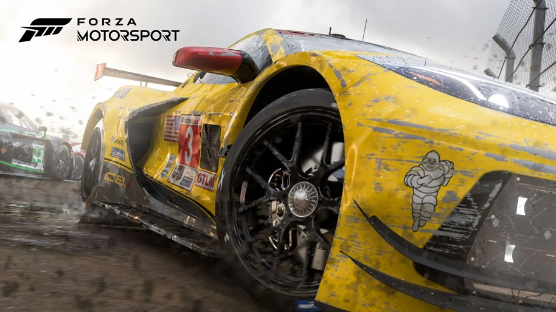

1. Somerville.
Com a data de lançamento inicial em 2022, semelhante a Limbo e Inside, Somerville é um jogo de aventura jogado de uma perspectiva em terceira pessoa, na maioria das vezes como um jogo de plataforma.
O jogador controla uma família de três pessoas, um pai, uma mãe e seu filho, bem como um cão de estimação, na esteira de um evento pós-apocalíptico na Terra. O jogador deve guiar um dos personagens através das ruínas da civilização, evitando estranhos artefatos alienígenas que tentam matar humanos, e trabalhando com sobreviventes humanos para encontrar segurança para a família.
Como Limbo e Inside, o jogo é apresentado sem diálogo, em vez de usar a configuração, ambientes e animações para contar a história. Está disponivel para Xbox One, Xbox Series X e Series S, Microsoft Windows.
Trailer Oficial2. ARK II
Previsto para lançamento inicial ainda esse ano de 2022 e eperado para laçamento oficial em 2023, de acordo com as poucas noticias liberadas pela Xbox e Bethesda Ark 2 é um jogo de sobrevinevincia pré-histórico MMO sandbox mantendo a temática do ARK I o primerio jogo da franquia trazendo algumas melhorias para o game e no trailer como podemos ver eles nós mostram que o jogo terá como personagem principal Vin Diesel.
ARK II é um dos jogos que se tem grande expectativas dos fãs para ser o jogo do ano e já foi divulgado pelo SEO da Wildcard que deu uma intrevista dizendo que estará dispinivel para todas as plataformas, más o lançamento inicial e oficial será somente para os consoles das novas gerações como Xbox Series X|S e PC. Ainda não temos informações, más acredita-se que não saira para as antigas gerações de consoles.
Trailer Oficial3. S.T.A.L.K.E.R 2: Heart of Chernobyl
S.T.A.L.K.E.R 2 que traduzido para o português que dizer PERSEGUIDOR. 2: Heart of Chornobyl é um jogo eletrônico de terror de sobrevivência de tiro em primeira pessoa desenvolvido e publicado pela desenvolvedora de jogos ucraniana GSC Game World. A historia acontece na Zona de Exclusão de Chernobyl, qua após um desatre nuclear ficou infestado de anomalias e mutações que desafiam as leis da física.
Data de lançamento está prevista para o dia 8 de Dezembro de 2022 e estara disponivel para Xbox Series X|S e PC. Más com inicio da guerra com a Russia a empresa ucraniana terá que adiar por tempo indeterminado, empresa fala sobre conflito com a Russia, saiba mais clicando no botão de a seguir. Saiba mais
Trailer Oficial4. Starfield

Starfield é um futuro jogo eletrônico de RPG de ação e ficção em desenvolvimento pela Bethesda Game Studios, publicado pela Bethesda Softworks e distribuído pela Microsoft que terá seu lnaçamento inicial em 2023 e estará dispoanivel para Xbox Series X e Series S, Microsoft Windows. odd Howard, produtor executivo da Bethesda Game Studios, afirmou que Starfield terá mais de mil planetas exploráveis. Você não leu errado, serão 1.000 mundos para os jogadores explorarem livremente. O desenvolvedor revelou a informação no Showcase Xbox & Bethesda que aconteceu neste último domingo 12 do Junho de 2022.
Starfield já chegou a ser descrito como um “Skyrim no espaço” por Todd Howard, o que deixou muitos fãs curiosos pelo que está por vir. Agora, mais informações sobre o jogo estão sendo reveladas — e confirmando algumas semelhanças de elementos entre os títulos. Em uma publicação no Twitter, a Bethesda confirmou que o novo RPG terá diálogos em primeira pessoa e que o personagem criado pelo jogador (ou seja, o protagonista da história) não terá voz. “Sim, os diálogos em Starfield são em primeira pessoa, e seu personagem não tem voz”, escreveu o estúdio.
Trailer Ofiical5. Forza MotorSports
A Microsoft anunciou no domingo 12 de Junho de 2022 o primeiro trailer do próximo jogo da franquia Forza Motorsport, o jogo é desenvolvido pelo estúdio Turn 10 e chegará aos consoles Xbox, PC e xCloud no segundo trimestre de 2023. A empresa afirmou que o jogo utilizará as técnicas mais avançadas para fornecer uma física realista e gráficos de última geração que contarão com Ray Tracing. De acordo com Chris Esaki, Diretor Criativo do Turn 10 Studios, todas as pistas do novo game foram desenvolvidas do zero, para poder usufruir de todo o poder de processamento encontrado no Xbox Series S|X.
O novo Forza ficou ainda mais realista e contará com mais detalhes com relação à temperatura, experiência de direção, gerenciamento de pneus e combustível. Além disso, será possível notar até os mínimos danos do carro como, por exemplo, arranhões individuais na carroceria, a tinta descascada e o acúmulo de sujeira.
Trailer Oficial